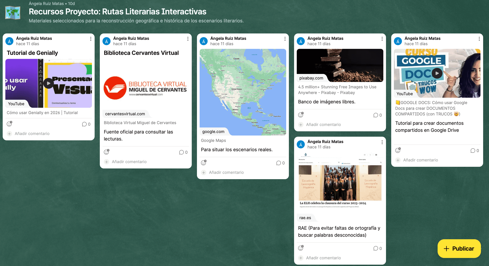

Vuestro Centro de Mandos: El Muro de Curación
Antes de sumergirnos en la labor de cartografía literaria que nos espera, os presento vuestro centro de mandos.
Para que no os perdáis en este viaje, aquí tenéis el enlace a nuestro Muro de Curación (Padlet). En este espacio encontraréis vuestros muros personalizados, organizados por secciones para que tengáis a mano toda la información necesaria: desde las fuentes para investigar los hitos literarios hasta el material de apoyo para vuestro producto final.
Recordad que este muro es vuestra brújula digital. Consultadlo a menudo para aseguraros de que vuestro mapa interactivo tiene el rigor y la calidad que buscamos. ¡El mapa está en vuestras manos!

Elaboración propia CC BY-SA 4.0
Con respecto a la curación de contenidos docentes, para facilitar vuestra labor de investigación he diseñado un Webmix en Symbaloo. Se trata de un tablero interactivo donde he seleccionado y organizado los recursos digitales adecuados para este proyecto. ACCEDER AL SYMBALOO